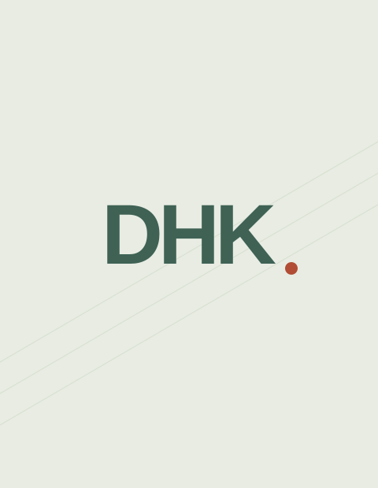

3D Gaussian Splatting for SLAM
Investigating 3D Gaussian Splatting for simultaneous localization and mapping. A manuscript is currently in preparation.
Seoul National University
Double major · Mechanical Engineering
Electrical and Computer Engineering
Robotics, 3D vision,
and learning from the world.
I am an undergraduate at Seoul National University, double majoring in Mechanical Engineering and Electrical and Computer Engineering. I work at the intersection of robotics, 3D vision, and machine learning.
I am an undergraduate researcher in the RPM Robotics Lab with Prof. Ayoung Kim and the AIDAS Lab with Prof. Jaeyoung Do. My current work focuses on 3D Gaussian Splatting for SLAM and visual data augmentation for robot learning.

3D scene representations Robot perception & SLAM Learning from visual data
What I am working on
My current research explores 3D Gaussian representations for mapping and visual data augmentation for robot learning.
Investigating 3D Gaussian Splatting for simultaneous localization and mapping. A manuscript is currently in preparation.
Developing the 3D Gaussian Splatting augmentation module for a broader robotic dataset effort: reconstructing scenes and rendering manipulation demonstrations from multiple viewpoints.
From models to working systems
An autonomous mobile robot that identifies, collects, and deposits target objects within a timed arena. I worked on perception and model training.
Reconstructing brain and knee MRI from undersampled k-space using specialized VarNet models, data augmentation, checkpoint averaging, and ensembling.
Recovering the chronological order of four shuffled frames from a text description using multimodal reasoning and structured permutation decoding.
A hybrid physics–ML ensemble for hourly wind generation forecasting. I worked on model architecture design and hyperparameter optimization.
A portable hands-free filming device that combines face tracking, motorized pan–tilt motion, and infrared remote control for solo creators.
Combining explicit periodic feature extraction with transformer forecasting, evaluated on weather and retail time series.
Where I have been
Feb 2026 — Present
Jun 2026 — Present
AIDAS Lab · Seoul National University
PI: Prof. Jaeyoung Do
Education
Undergraduate · Double major
Mechanical Engineering
Electrical and Computer Engineering
Team achievements
Get in touch
I’m interested in robotics, 3D vision, and learning-based perception.
martian35@snu.ac.kr